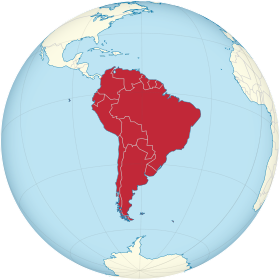

أمريكا الجنوبية

خصائص جغرافية
المساحة : 17843000 كيلومتر مربع
عدد السكان
عدد السكان : 385742554
الكثافة السكانية : 21.61 نسمة/كم2
فيديو تعريفى
تعريفها
إحدى قارات العالم الجديد تقع في القسم الغربي لخط غرينتش في نصف الأرض الغربي، معظم كتلتها تقع في نصف الأرض الجنوبي، مع جزء صغير نسبيًا في نصف الكرة الشمالي. يمر بها خط الاستواء في أجزائها الشمالية. سميت على اسم أمريجو فيسبوتشي أول مستكشف اقترح أن أراضي العالم الجديد هي ليست الهند الشرقية. أهم دولها الأرجنتين والبرازيل. يحدها من الشرق المحيط الأطلسي ومن الغرب المحيط الهادي أما من الشمال فتحدها أمريكا الشمالية والبحر الكاريبي، يحدها من الجنوب التقاء المحيطين الأطلسي والهادي بالإضافة إلى القارة القطبية الجنوبية.
السياسة فى أمريكا الجنوبية
أمريكا الجنوبية هي موطن أعلى شلال في العالم، شلالات أنجل في فنزويلا، ونهر الأمازون هو أكبر نهر، وجبال الإنديز هي أطول سلسلة جبال، وصحراء أتاكاما المكان الأكثر جفافاً على وجه الأرض. وموطن أكبر الغابات المطيرة، غابات الأمازون، وأعلى عاصمة، لاباز ببوليفيا، وبحيرة تيتيكاكا كأعلى بحيرة ملاحة تجارية في العالم، ومحطات البحوث في بويرتو تورو التشيلية في أنتاركتيكا، كأقصى مكان جنوب الأرض مأهول بصورة دائمة.


مركز الأرض في أمريكا الجنوبية
ويقع “مركز الأرض”، وهو نقطة الالتقاء الصفرية بين خط الاستواء وخط العرض الرئيسي القطبي، في العاصمة الإكوادورية كيوتو، وهو من أهم معالم السياحة في أمريكا الجنوبية والكاريبي ويحيك الإكوادوريون أساطيرًا كثيرة مصدرها السكان الأصليين (الهنود الحمر) حول مركز الأرض، هذه النقطة التي ستندهش عند وصولك إليها عندما ستضع بيضة على مسمار مثبت في لوح خشبي فلا تقع، وكذلك الأمر إذا فعلت مع عملة معدنية. 20 كيلومترًا فقط شمال العاصمة كيوتو، هي المسافة بين العاصمة والمجسم المربع الذي يعلوه مجسم للكرة الأرضية، في إشارة إلى أن هذه النقطة هي مركز الأرض ومنتصف العالم.


السياحة فى أمريكا الجنوبية
المقالة الرئيسية فنادق أمريكا الجنوبيةالسياحة في أمريكا الجنوبية مهمة جدا كمصدر للدخل لمعظم بلدان أمريكا الجنوبية . وبما لديهم من مجموعة واسعة من المدن الملونة والنابضة بالحياة ، والأغذية ، والثقافة ، وعدد من المناظر الطبيعية الخلابة لجذب السياح في كل وقت . ريو دي جانيرو ، سلفادور ، فورتاليزا ، ماسيو ، ريسيفي ، أوليندا ، بحيرة تيتيكاكا ، ميديلين ، باتاغونيا ، بوغوتا ، ليما ، فلوريانوبوليس ، ماتشو بيتشو ، غابة الأمازون ، إسلا مارغريتا ، ناتال ، بوينس آيرس ، ساو باولو ، أنجل فولز ، نازكا لينس ، كارتاجينا وجزر غالاباغوس هي المواقع السياحية الأكثر شعبية في القارة
|
أمريكا الجنوبية |
|
|
|  |
|
خصائص جغرافية المساحة : 17843000 كيلومتر مربع |
|
عدد السكان عدد السكان : 385742554 الكثافة السكانية : 21.61 نسمة/كم2 |
|
فيديو تعريفى |